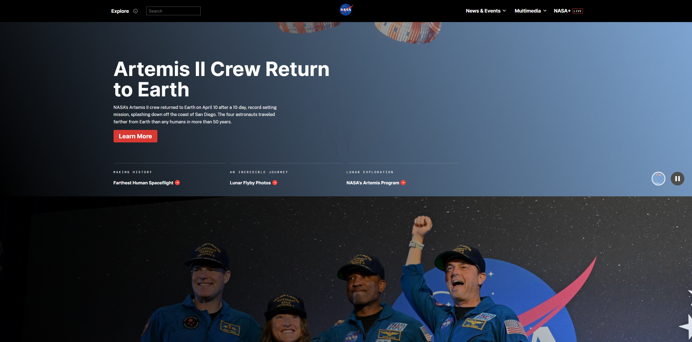

https://www.nasa.gov
National Aeronautics and Space Administration
The target audience is the general public including students, researchers, educators, and people interested in space and science. The site has NASA news and mission updates.
The site is organized hierarchically. The main navigation has top level sections like Explore, News and Events, and Multimedia. The Explore menu breaks into specific topics bout NASA. Each of those leads to more pages underneath.
They use Contrast very well. The entire site has a black background with white text and bright images which makes everything easy to read. A good example is the homepage hero section which shows the Artemis II headline in large bold white text over a dark space background. The red Learn More button also stands out clearly against the dark design.
The site scored 59 out of 100 on the Accessibility Checker. This is a lower score which means there are accessibility issues that should be improved to make the site more usable for people with disabilities.
Users can find what they are looking for using the Explore menu which has clearly labeled categories. The search bar at the top also helps users get to specific pages quickly.
The site is mostly efficient but the homepage scrolls for a very long time before you reach the bottom. There is a lot of content stacked on the main page which can make it take longer to find something if you are just scrolling instead of using the navigation menu.
The site is very engaging. The black background with full screen space photography and videos makes it visually exciting right away. The homepage currently features the Artemis II crew return which is recent, it feels more recent.
I would recommend shortening the homepage. It scrolls for a very long time and has a lot of sections stacked on top of each other. Breaking some of that content into separate pages or adding a jump to section feature would make it easier for users to find what they want without scrolling so much.
